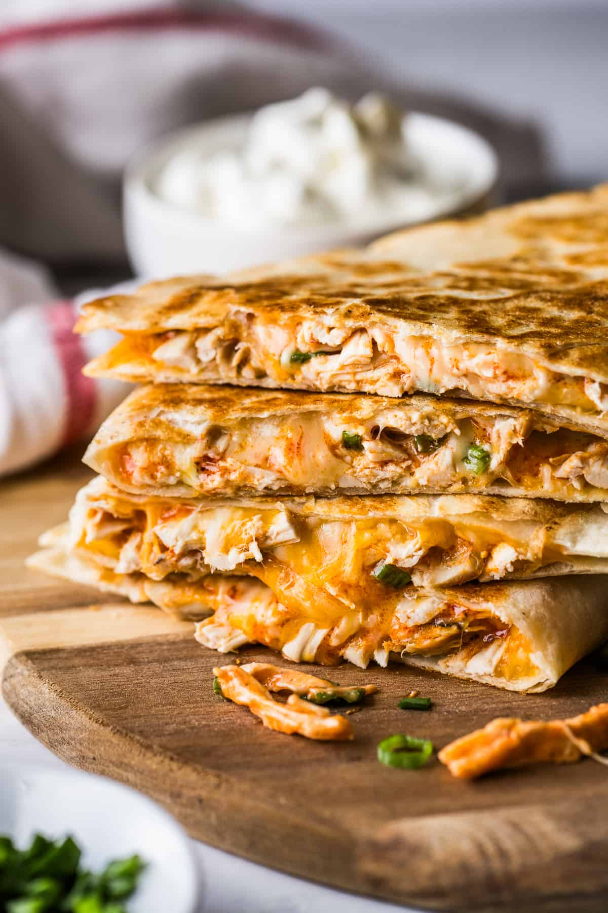

Dawg Bowl

Description
This will pack the protein into your frail body. The God's themselves couldn't think of a
more nutritious dish.
Ingredients
- 2 12-inch tortillas
- 1lb chicken breast
- 60g cheddar cheese
- Ranch as needed for dipping sauce
Instructions
- Fillet your chicken breasts so they're about 1/2 inch think so you can cook
them evenly.Season both sides then place in 12-inch pan at medium heat and cover.
- Flip after 6-8 minutes
- Once they're finished cooking, take them out of pan and cut into bite size pieces.
Bonus points if you shred the chicken.
- Clean your pan then place tortilla in pan. Spread 30g of cheese on one tortilla.
- Place 1/2lb of your chicken into the tortilla and lay one side over the other.
- Flip once you can see the underpart is browned.
- Take off once the other side is done.
- Repeat steps for 3-7 for the other quesadilla.
- Enjoy and dip in ranch as needed.
Home